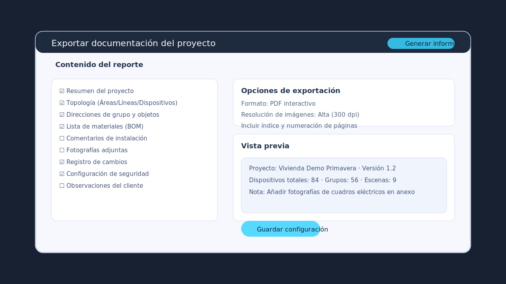

Documentación esencial

ETS5 genera reportes estructurados con listas de grupos, dispositivos y materiales listos para entregar al cliente.
Genera reportes de topología, grupos y lista de materiales desde ETS5.
Exporta el archivo .knxproj y controla versiones y respaldos.
Incluye planos, fotos del cableado y tablas de direcciones en el entregable.
Capacita al usuario final con manuales simplificados y sesiones de cierre.
Buenas prácticas operativas
Diseña soluciones modulares para facilitar escalabilidad y mantenimiento.
Etiqueta cables, actuadores y pulsadores directamente en campo.
Utiliza apps de ETS (Device Templates, Project Tracing) para optimizar tareas.
Planifica mantenimiento preventivo y revisiones periódicas del bus.
Actividad práctica sugerida
Desarrolla una vivienda demo con iluminación, persianas y detección de presencia.
Configura escenas "Llegada" y "Salir" con lógica de horarios y sensores.
Documenta resultados de pruebas y prepara entrega simulada al cliente.